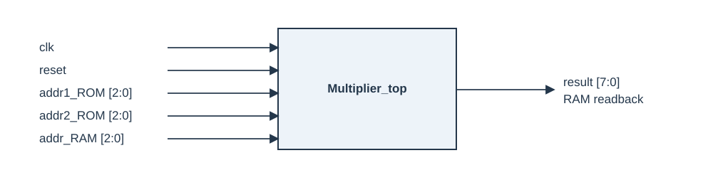
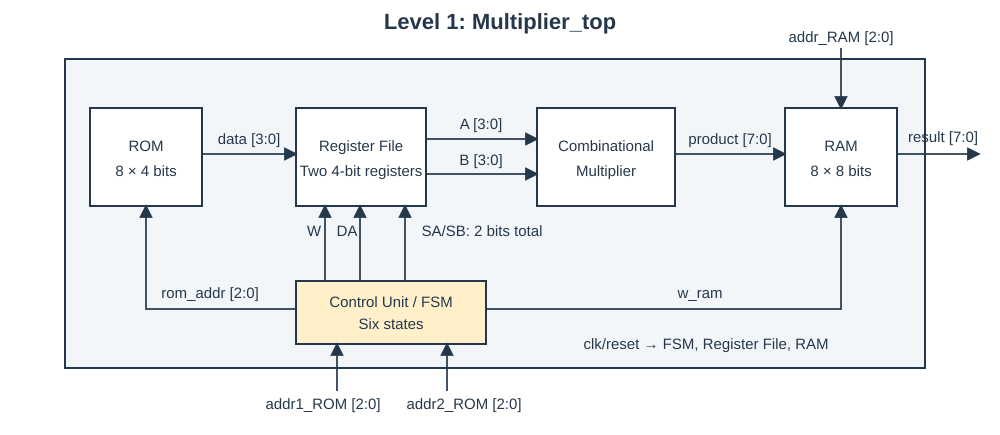
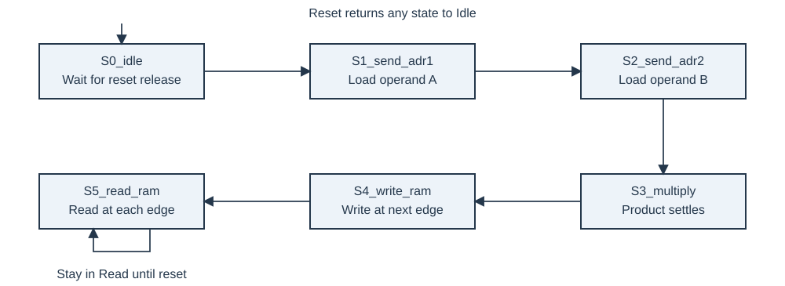

ROM, register file, multiplier and RAM form the datapath. The controller selects the ROM address, loads the operands and enables the RAM write. The output is RAM readback.
Write side: The decoder combines W and DA. When W=1, DA=0 enables register 0 and DA=1 enables register 1. The selected register captures D at the next rising edge. When W=0, both hold.
Read side: SA and SB use two bits total: one separate 1-bit select per mux. Both 4-bit registers feed both muxes. SA selects the source for A and SB selects the source for B. In Lab 10 the controller ties them to 0 and 1, respectively, so A always comes from register 0 and B from register 1. The muxes do not wait for a clock edge.

For 12 × 6: edge 1 leaves Idle, edge 2 captures 12, edge 3 captures 6, edge 4 enters Write, edge 5 stores 72, and edge 6 reads 72 back. Reset clears the RAM at a rising edge.